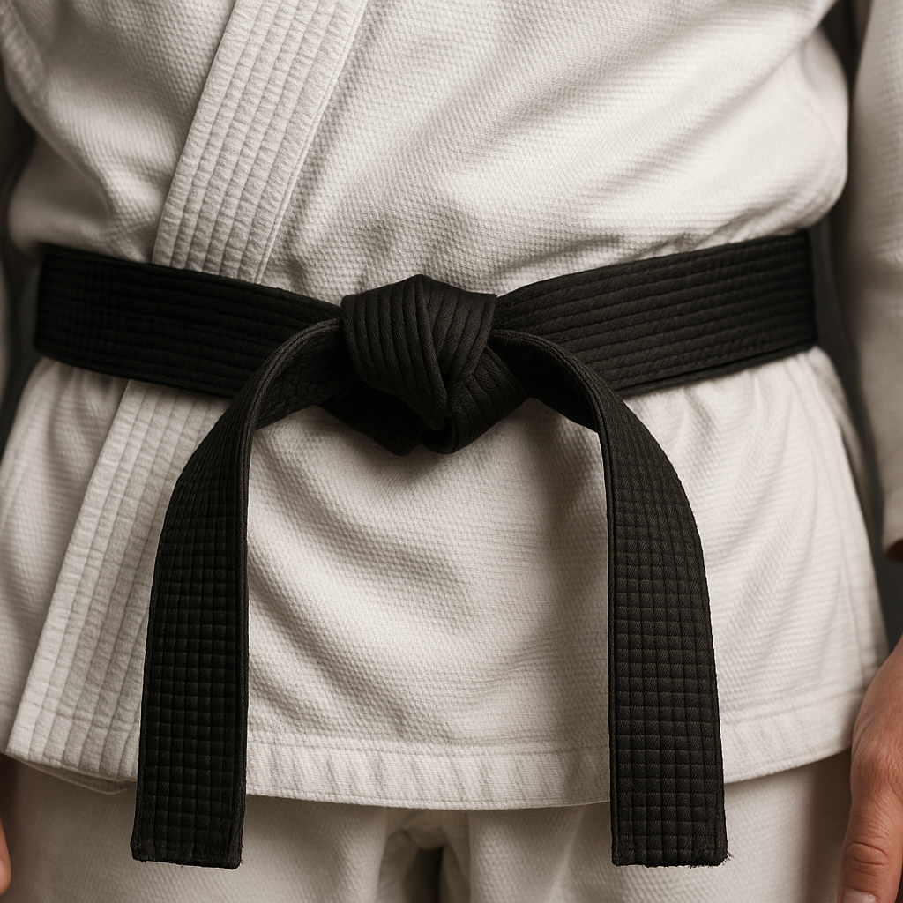
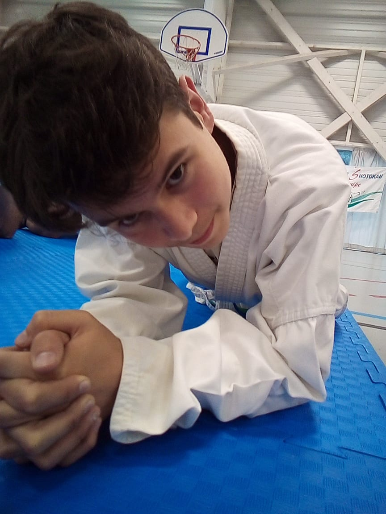
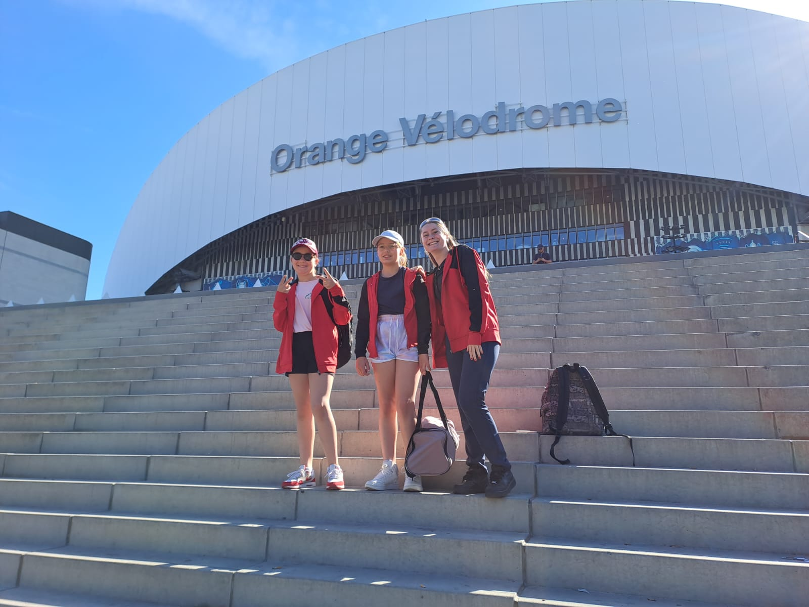

La Vie de la section karaté du FKS à La Chataigneraie

Félicitation
Juin 2025 : Trois nouvelles ceintures noires

Fin de saison 2025
La saison 2025 se termine en mode festival 🎪🎉 : Forum des associations à La Châtaigneraie 🤝 & fête du FKS 🥋✨ Merci à tous !

Championnat de france - Marseille 2025
Zelie, Cléophée, Gabin et leurs parents nous racontent leur expérience